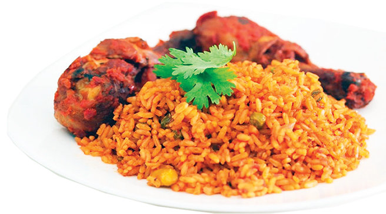

Jollof Rice
g
Description
This is a dish commonly prepared by the West African people, especially in Nigeria and Ghana.
Ingredient
- Rice
- Meat/Chicken/Turkey
- Vegetable oil
- Onions
- Tomato paste
- Garlic & Ginger
- Liver
- Butter
- Curry & Thyme
- Salt and Seasonings
- Kitchen foil
- Crayfish
- Bay leaf
- Scotch bonnet, Read ball & Tomatoes
- etc.
Steps
- In a pot on fire, add vegetable oil.
- Add garlic & ginger.
- Add Tomato paste and fry for about 10-15 minutes.
- Add all the pepper mix and fry for few more minutes.
- Add salt & seasonings.
- etc.
Back to Homepage